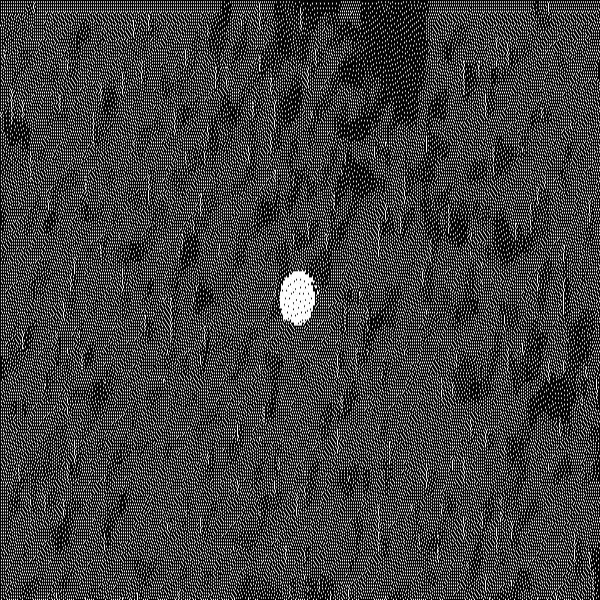
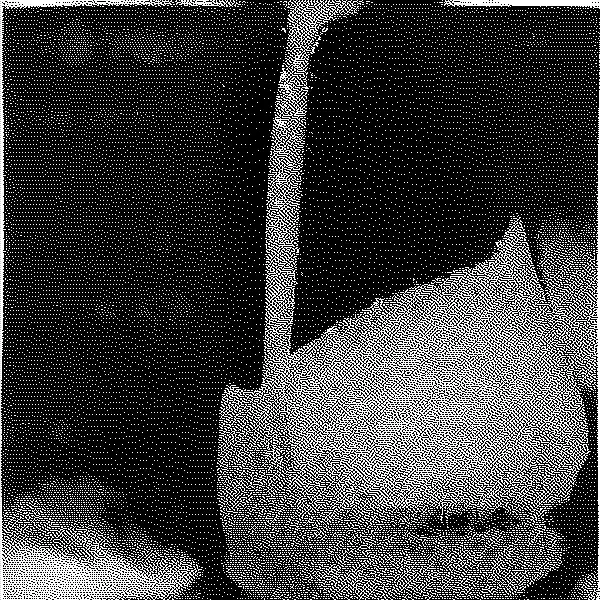
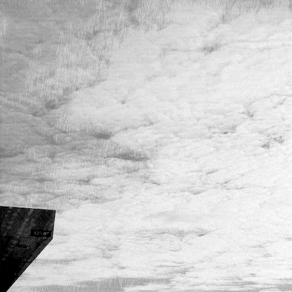
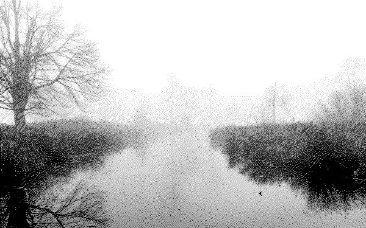
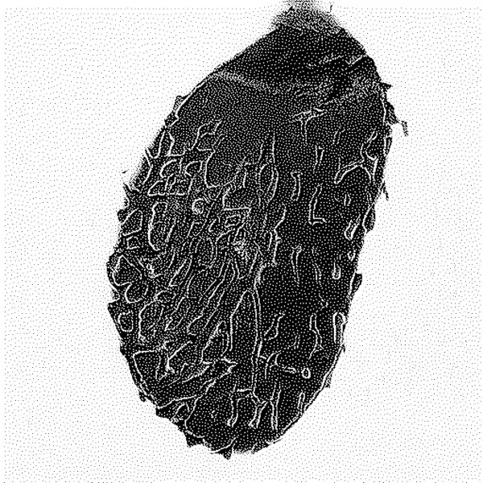
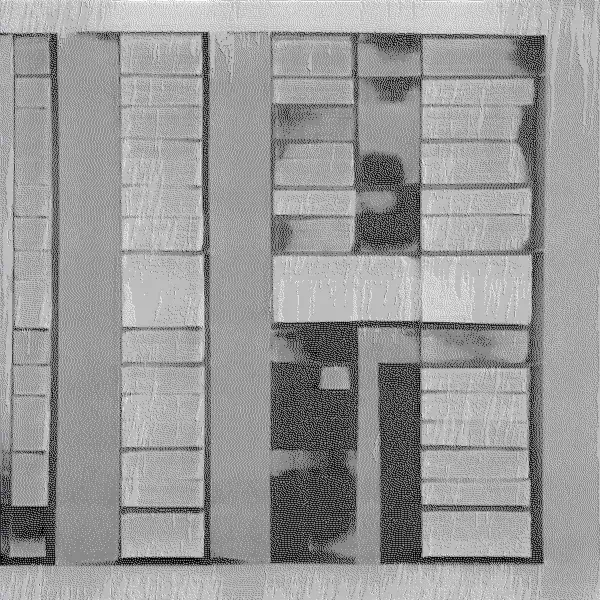
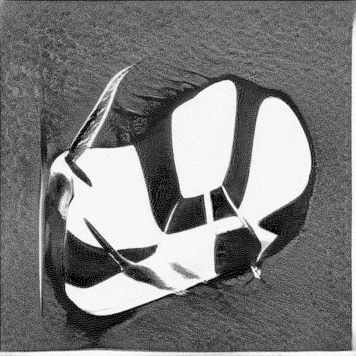
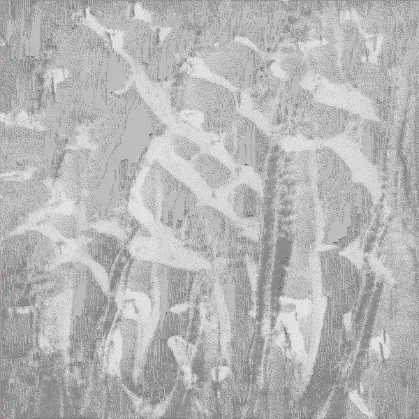
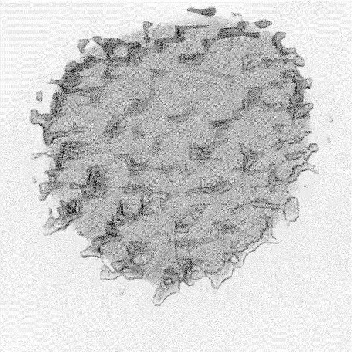

2022/03/28
So, I got a chromebook. I'm genuinly very impressed with the
programming potential of these litte, cheap things. For about 300
dollars, I've got a device that can run multiple gitpod instances,
watch some youtube videos, talk to coworkers and friends, and run nvim
in a browser tab. There are things on here I never knew I would want
to have, and it feels like every day I find a new quirk to explore. I
guess I've become chromepilled and am now just waiting for the rest of
the world to do literally everything within the domain of a browser
window ( not very open-source of me I guess ).

2022/03/10
Welp, both Xinrui and I are terribly sick. Went in for a covid-19 test
today to see if we could rule that out - but I'm honestly not sure
what this could be. I'll spare you from the list of symptoms but it
has been a very tough couple of days.
In other news, I've been messing around with alternative keyboard
layouts again. Workman and Colemak are the two I always come back to,
always unfruitful in my efforts to unlock a secret super efficient new
workflow. Yet the practice of trying to unlearn QWERTY tickles my
brain in a very nice way that keeps me coming back every couple years.

2022/02/28
Just got my first 'espresso machine' in the mail today. A Flair NEO.
I'm no espresso expert by any means, but this robot looking lever
contraption can make a damn good espresso considering I'm lacking on a
lot of other 'ingredients' such as a $500 grinder and 0.001g tuned
Acacia scale.
Currently typing this from inside a warehouse-feeling brewery in
Capitol Hill. Drinking a ridiculously smooth red ale while scouring
meetup.com for new avenues to meet friends with Xinrui. There's a
lovely little taco truck outside pedalling hot pork but might need a
slice of pizza after all this to settle the stomach. See you next time
: )

2022/02/07
I have a glass of wine, and my trusty kindle by my side, with nothing
much to talk about on here. I'm still doing mostly the same things (
learning rust, working on code generators for my 9-5, trying to stay
fit, and building the most over-engineered homelab possible on my
budget ). Xinrui can finally walk again so we took a stroll through
Costco for our re-up on rotisserie chicken, protein bars, and a failed
attempt at finding group pork for homemade dumplings.
Our home is now very blue, even though not many things have been
painted this color - everything else is so drab that our room mostly
looks blue. Our coffee table / media center has this stickiness ( due
to the latex in the paints glossy finish ) that I sort of admire for
its strength, firmly securing my cup to the table at all times.

2022/01/27
I got a new computer - did a massive amount of distro hopping from
antix to fedora silverblue. I've settled on Pop OS for now as it's
simple and 'Just Works' while letting me customize it to feel like
home. Beyond that, I've been doing good - just working on projects and
continuing to further my knowledge of the rust language.
Xinrui's ankle is still slowly healing but I'm hoping we can go do
something outside in February. As things are getting warmer and the
sunsets are getting more intense, nature has started to call me. Till
next time ~

2022/01/02
Everyone I know is getting COVID-19 so I imagine i'll be spending
quite a lot of time at home again. Time to advance my learning of
tricky javascript concepts + continue my journey learning rustlang ~
I recently ordered some new switches for my keyboard and will be doing
my first ever 'lubing' of said switches and stabilizers. Hoping I
don't make a mess but looking forward to the supposed meditative
effect of the whole process.

2022/12/28
Don't have much to share this time - just felt like writing and
putting up this new picture. I finally have my new desktop running
linux ("Endeavour OS btw") setup
and customized to my likings. I'd like to thank everyone over at
r/unixporn for the
dotfiles and pure aesthetics.
I guess the photo for todays post should thematically be my new
desktop setup but... I just got my dropbox all working again and found
some old art stuff I made a year or two ago. This little rock cluster
blurbily thing is one of those art pieces! I ran it through the
standard `lid -m r` and thought it came out pretttttty good. Anyways -
have a lovely rest of your year and see you in 2022 ~

2022/12/26
Hi again! ~ Merry Christmas ~ if you celebrate such things.
It almost snowed today in Seattle, which would've been the first time
I've seen snowy earth since I lived in New York - aswell as the first
time Xinrui has gotten to experience
real snow. Alas - the elements didn't line up and all we got was wet
mush melting away within 10 minutes.
I'm hoping that the
'Record
Breaking'
cold temperatures in the next few days might bring some actual powder
to the Emerald City.

2022/12/22
Hello! Welcome to my home away from home. Incase you're new
here - I update this section every now and then with some recent
life-news. I recently moved back to my home state of
Washington. It's nice to be back in Seattle,
surrounded by trees and drizzling
clouds.
